READING MAP · 展开目录
解读 by Xinkai Wang（王薪恺） · 上海创智学院 · 2026
原论文：Native Video-Action Pretraining for Generalizable Robot Control · arXiv · 官方网页 · GitHub
技术细节、公式与实验协议以论文为准；官方项目页补充动态演示、能力概览和交互式成功率图。网页中的产品化表述与正式实验结论在文中分开讨论。
SECTION 00先抓住整篇论文的主线
这篇论文最重要的判断是：机器人需要的不是“一个很会生成视频、后来被改造成策略的模型”，而是从表示、预训练目标、时序因果到部署循环都以闭环控制为第一约束的原生 video-action foundation model。
- 问题不是少一个动作头，而是起点错了。传统视频 VAE 优先保存像素外观，双向视频扩散允许看见未来；机器人控制却要求动作相关表示、严格因果和高频反馈。
- 第一层重构表示。新 tokenizer 同时做像素重建、视觉基础模型语义对齐，并从相邻帧自监督提取 latent action，让无动作标签的视频也携带“世界如何变化”的控制信号。
- 第二层重构预训练。模型从头训练 causal DiT，用未来视觉生成与逆动力学联合学习；视频流换成 128 个 routed experts、每 token 激活 8 个的稀疏 MoE，动作流保持稠密。
- 短视 teacher forcing 用 MCP 修正。一次监督未来 1–3 个 chunks，迫使中间表征学习轨迹级动力学，而不是靠复制相邻帧外观降低损失。
- 部署以“预测—执行—纠偏”闭环。Foresight Reasoning 在机器人执行当前动作时提前推算下一动作，真实观测回来后覆盖 imagined latent；再叠加一致性蒸馏、FP8 TensorRT、paged KV cache 与 FlashInfer。
- 证据最强之处在 tokenizer、MCP 和速度链路。RoboTwin 平均 93.6%，tokenizer 在 50 任务平均上提升 7.1–8.6 个百分点，MCP 在 50 fps 随机化设置 5k steps 时提升 29.7 个百分点，端到端推理从 927 降到 142 ms/chunk。
一句话概括
LingBot-VA 2.0 把“未来画面”从生成质量目标改造成动作决策的中间变量，再用真实反馈不断纠正这段想象，使世界模型真正进入控制回路。
SECTION 01问题从哪里来：视频生成与机器人控制的三重错位
过去一代 video-action model 的典型做法，是先拿一个为数字内容生成训练的 VAE 与视频扩散模型，再把它改成 causal、接上 action module、用机器人数据继续训练。LingBot-VA 2.0 认为这种路线的上限由预训练起点决定。
像素好看，不等于动作可辨
重建型 VAE 会保存纹理、颜色与局部细节，却没有动力学、任务语义或“什么变化由动作引起”的结构。
视频模型能看未来，机器人不能
双向注意力让所有帧互相访问；闭环策略在时刻 t 只能使用过去与现在。后期改 causal 会改变计算图并侵蚀旧先验。
生成一次视频的延迟会变成控制停顿
高维视觉 tokens 与多步去噪过慢；如果模型推理和真实动作串行，机器人每个 chunk 之间都会等待。
研究脉络：从“直接反应”到“先想象再行动”
优势是继承互联网视觉语言先验，路径短、推理快；弱点是没有显式表示动作会怎样改变世界，长时一致性和样本效率受限。
Dreamitate、UniPi、UWM、DreamZero 与 LingBot-VA 等工作把未来视觉、视频条件或联合 video-action diffusion 引入策略，让动作建立在预测的状态转移上。
Genie、LAPO、LAPA、Moto、UniVLA、RepWAM 与 Motus 等路线，从连续观测中推断离散或连续 latent action，为大规模人类/网页视频提供控制监督。
语义 tokenizer、latent action、causal DiT、MCP、human–robot co-training 与异步闭环部署被放在同一套训练目标里，从头面向机器人控制。
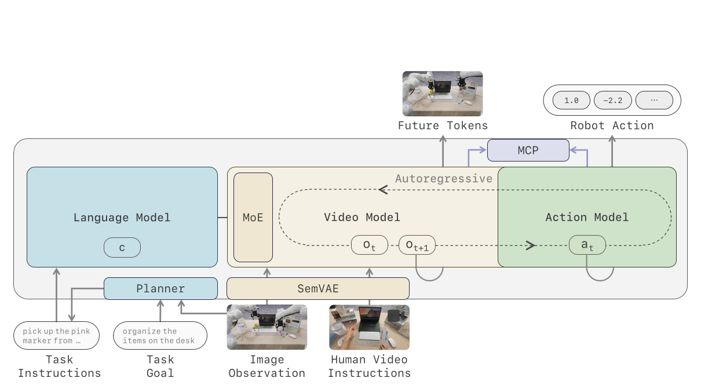
图中央的关键箭头不是 observation → action，而是 observation → future latent → action。也就是说，动作不是直接从当前帧猜出来，而是从“当前世界会如何演化”这个预测中解码出来。上下两层分别解决长时任务语义与高频连续控制。
“原生”不等于每个模块都第一次出现
semantic/latent tokenizer 建立在 RepWAM 上，MCP 来自 Next Forcing，视频 ICL 延续 Zero-WAM，MoE 路由借鉴 DeepSeek 系列与 Loss-Free Balancing，一致性蒸馏来自 Consistency Models。真正的创新重心是：把这些部件按闭环控制的因果链组织成一套从预训练到部署的一体化系统。
SECTION 02把 video-action model 写清楚：它同时回答两个问题
第一问是“世界下一步会变成什么样”；第二问是“什么动作把当前状态变成了那个未来”。论文用 flow matching 同时学习未来视觉与动作 chunk。
先把原始动作对齐到视频 latent 的时间尺度
视频 tokenizer 会按时间下采样。若原视频有 T 帧，latent 只有 T′ 帧，那么每两个 latent 之间对应 ft=T/T′ 条低层动作。论文把这些动作合成一个 chunk；后文的 at 从来不是单条电机命令。
严格因果：现在不能注意未来
联合分解：先生成未来，再用逆动力学解码动作
Flow matching 的通俗解释
它不是让模型一次从噪声猜出目标，而是在噪声 ε 与真实 latent z 之间画一条直线 z(s)=(1−s)ε+sz，让网络预测沿这条线前进的速度 z−ε。推理时沿速度场积分，就能把噪声搬到数据分布。视频和动作各有独立噪声时间，因此视觉可以在一个噪声水平上去噪，动作在另一个水平上去噪。
Lact = E ‖vθact(at(s),s | z≤t,a<t,zt+1) − (at−εa)‖²
SECTION 03第一块基石：语义视觉-动作 tokenizer
普通 VAE 问“能否还原像素”；这里的 tokenizer 还要问“latent 是否保留任务语义”以及“两个状态之间的变化能否压缩成动作变量”。
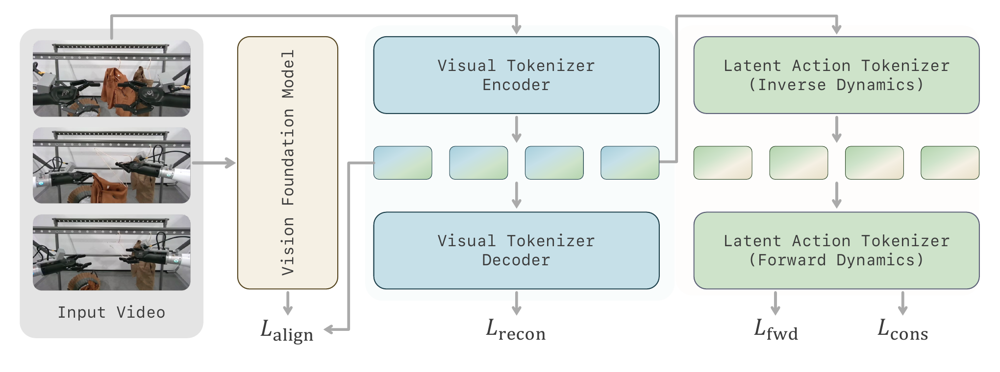
视觉 tokenization：既要可重建，也要“知道是什么”
输入视频的第一帧被切成 16×16 spatial patches，后续帧切成 4×16×16 spatiotemporal tubelets。编码器在单帧内部使用 full spatial attention，在时间上使用 causal attention；对称 decoder 把 latent 还原到像素空间。
Lalign = ‖avg(Walignz) − avg(G(o))‖²2
Lvis = Lrec + λalignLalign
Latent action：把“变化原因”压进一个低维瓶颈
冻结视觉 tokenizer 后，inverse dynamics model qφ 读取 (zt,zt+1)，输出低维 latent action ℓt。若 ℓt 容量太大，它可以偷懒复制整个未来状态；因此论文要求 dℓ ≪ dim(zt)，逼它只保留导致变化的紧凑变量。
ẑt+1 = fψ(zt,ℓt) = Ktzt + δt
Lℓ = Σt(‖ẑt+1−zt+1‖² + ‖ẑt−zt‖²)
它解决了什么
- 视觉 latent 不只保存外观，还贴近语言对齐的感知特征。
- 网页/人类视频没有机器人动作标签，也能提供 transition-level action signal。
- 状态变化通过 transport + residual 被结构化，长 horizon 更不容易退化成纹理复制。
仍需澄清什么
- 论文没有给出 dℓ、输入分辨率和 temporal downsampling 的具体值。
- 被动视频的 latent action 可能混入相机运动、场景随机变化或非施动者影响。
- 方法段写 at≡ℓt，实现段却用 30-D raw robot action；两者的桥接目标未完整展开。
最通俗的理解
传统 VAE 像压缩视频的 ZIP：只要解压后像原图就行。这个 tokenizer 更像给每段视频同时写“场景语义标签”和“发生了什么操作”的运动摘要，后续策略不必从纯像素压缩码里重新发现控制结构。
SECTION 04双系统层级策略：2 Hz 的规划器与高频执行器
低层 video-action policy 擅长完成一个局部 subtask，却不天然知道长任务何时切段。论文用一个预训练 VLM 做高层 planner，在后台低频理解任务进度，把结构化上下文持续写给高频执行器。
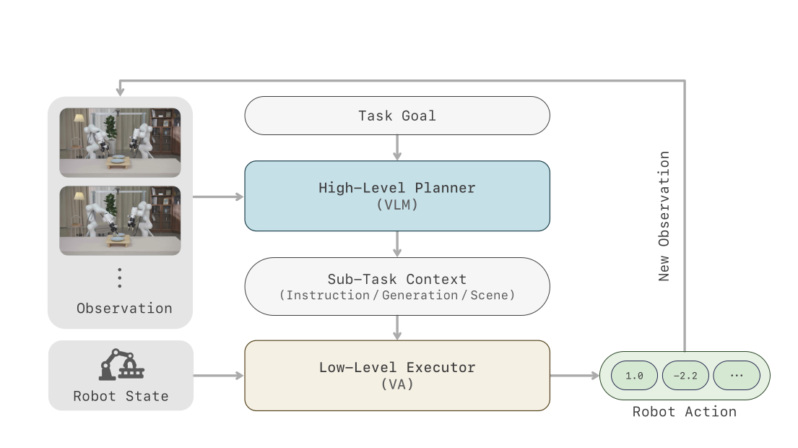
为什么输出格式本身就是模型接口
Planner 并不是自由写一段“思考过程”。如果推理时的字段、句式或信息粒度与策略训练时不同，低层模型会收到分布外条件。于是作者把 planner 当作一个严格的 interface module：done 控制调度，后三个文本字段才进入 video-action policy。
Boundary-crossing sampling：直接训练“何时换下一步”
| 样本类型 | 观测时刻 t* | 模型目标 | 训练难点 |
|---|---|---|---|
done=false | 仍位于 segment gi 内 | 复述当前 gi 的四字段 | 持续追踪当前步骤是否仍成立 |
done=true | 刚跨过 gi→gi+1 | 直接预测下一段 gi+1 | 不能看到当前 subtask 文本，只能从画面和历史推断转折 |
每个样本输入三张关键帧：t*−2 s、t*−1 s 与 t*；再加 episode-level goal、所有已完成 segment 的文本历史，以及仅在 done=false 时提供的当前 subtask。训练集按任务均衡，避免常见任务淹没稀有长程步骤。Planner 冻结 vision tower，只对预训练 VLM 的语言侧做 LoRA 微调。
双系统的工程意义
高层视觉语言推理慢，但它不需要 30 Hz 运行；低层动作生成快，却不该每个控制周期重新解决“整个任务下一步是什么”。异步 buffer 把两者解耦，让 planner 延迟不阻塞机器人，同时允许 executor 在 chunk 边界获得更新后的语义上下文。
SECTION 05因果 DiT 与稀疏 MoE：容量很大，每个 token 不必全付
LingBot-VA 2.0 保留 Mixture-of-Transformers 的双流结构：视频流负责复杂视觉动力学，动作流负责低维控制。两者共享 causal attention，但视频 FFN 被替换为稀疏 MoE，动作 FFN 保持 dense。
Video stream · Sparse
30 个 causal DiT blocks，video hidden 2048；进入共享 3072-D attention。每层 128 个 routed SwiGLU experts、Top-8，加 1 个 shared expert。
示意图按 32 个格表示专家池，橙色格表示稀疏激活比例；真实配置为 128 选 8。
Action stream · Dense
统一 raw action 为 30-D，按数据集 quantile normalization；缺失维 zero-pad 并 mask。action hidden 768，FFN 3072。
Video Q/K/V 从 2048 投影到 3072；Action Q/K/V 从 768 提升到同一 attention 空间，再各自投回原宽度。跨注意力共享文本 K/V，但动作流有独立 Q 与输出投影。
Router 怎么选 expert
R(h)=TopKgroup(r(h)+b,k), |R(h)|=k
αi(h)=γ · ri(h) / Σj∈R(h)rj(h)
MoE(h)=Eshared(h)+Σi∈R(h)αi(h)Ei(h)
不用 auxiliary loss，怎样避免所有 token 挤到少数专家
每个优化 step 后统计 expert i 接收到的 token 数 ci。高于均值就降低其选择 bias，低于均值就提高 bias；更新还减去全体符号的均值，避免整体漂移。
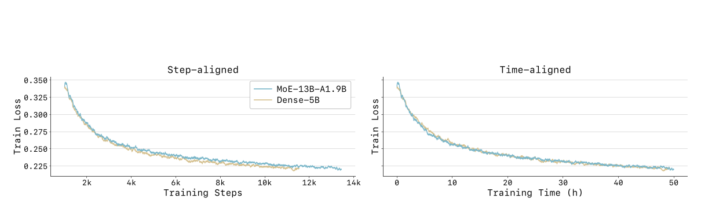
主模型规格，一张表看完
Causal chunk generation 的训练随机化
- Chunk size：每一步在 1–4 个 latent frames 中均匀采样；评估固定为 2。
- History window：训练在 1–64 chunks 中均匀采样；评估使用 64-chunk sliding window。
- Exposure bias：以 0.5 概率把 clean history 换成小噪声版本，模拟自回归推理时上下文不完美。
- Text：UMT encoder 输出 4096-D、最长 512 tokens；以 0.1 概率丢文本做 classifier-free guidance。
- 独立噪声时间：视频与动作的 diffusion timestep 分开采样；各自的 256-D sinusoidal embedding 经 MLP 生成 AdaLN 调制信号。
- 模态专属参数：除共享的 3072-D joint-attention 空间外，视频与动作各有 LayerNorm、AdaLN table、timestep/text condition embedder 和输出头；视频头为 LayerNorm + linear 到 96×4=384 channels/patch，动作头为 LayerNorm + linear 768→30。
参数量里的一个容易漏读的细节
Video backbone 约 13.0B total / 1.9B active，action expert 约 0.6B，三个 MCP heads 约 1.7B，所以训练总参数约 15.3B。标准推理丢弃 MCP，单 token 约激活 2.5B 参数。稀疏只降低每次计算，不会让 15.3B 权重的存储、加载和编译成本消失。
SECTION 06让预训练真正面向控制：MCP、ICL 与人机共训练
原生 causal backbone 只是骨架。真正把网页视频、人类视频和机器人轨迹变成控制知识的，是三类额外信号：看得更远的 MCP、把示范当上下文的 ICL、以及把人手动作重定向到机器人空间的 co-training。
MCP：相邻帧太像，模型会靠“复制”作弊
在高帧率视频中，next chunk 与 current chunk 可能只有很小外观差异。只做 next-chunk teacher forcing，网络不必理解动力学也能得到低 loss。MCP 从同一 grounded prefix 同时监督未来三个 horizon，迫使主干表征编码轨迹级变化。
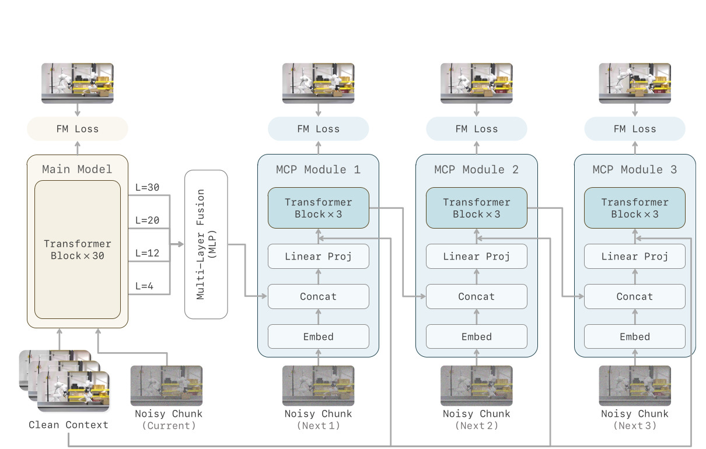
LMCP = Σk=13wkLkMCP, (w1,w2,w3)=(0.5,0.2,0.1)
Video ICL：示范视频是“动态说明书”
文本很难完整描述稀有物体、复杂接触和多步骤时序。ICL 把一段语义一致的人类示范编码成 zicl，允许每个机器人 prediction step 读取整段示范。因为它来自另一条独立轨迹，不是机器人自身未来，所以不会违反机器人侧 causal mask。
Human–robot co-training：把手当成虚拟平行夹爪
人类视频廉价、多样，但手指与机器人 gripper 的动作空间不同。论文把每只手的 6-DoF world-frame root pose 原样保留，把 22 个 finger joints 通过 forward kinematics 还原 fingertip 位置，再把拇指视为一侧 jaw、其余四指视为另一侧，沿闭合方向计算整只手指包络的 aperture；该开度像机器人 gripper channel 一样按数据集做 quantile normalization。
这样一来，人类动作被映射到统一 action layout 的双手 end-effector slice：每手 6-DoF pose + 1 个 gripper opening。缺失通道 zero-pad 并 mask；人类与机器人各有 action encoder/decoder，却共享 video expert、action expert 与 causal attention。训练开始时，human action heads 从 robot heads 初始化，再按样本的 embodiment 选择对应分支更新，这比随机初始化提供了更稳定的共训练起点。
ât(d)=Pd(vact(z≤t,Ed(a<t),ẑt+1)), d∈{R,H}
Lco-train=EDR[Lvid+LactR]+EDH[Lvid+LactH]
五个任务从头共训练，而不是训练完一个就扔掉
SECTION 07Foresight Reasoning：机器人执行时，模型已经在准备下一步
如果必须等当前动作结束、拿到新观测、完成多步去噪，再执行下一动作，那么模型延迟会直接变成机器人停顿。Foresight 把 prediction stream 与 execution stream 并行，但用真实观测持续把想象拉回现实。
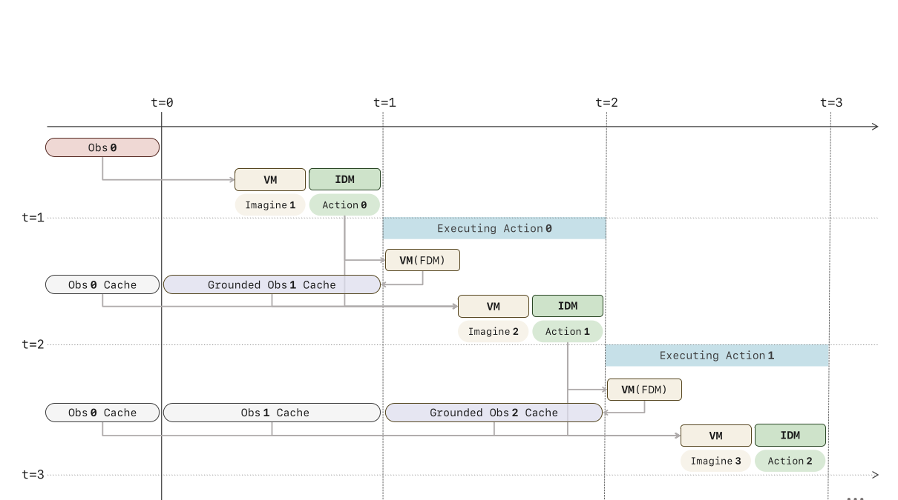
一步循环拆开看
- Grounded cache Ct：保存由真实观测确认的历史 (z≤t,a<t)。
- 动作正在执行：把 at 临时附加到 Ct；机器人继续运动，不等模型。
- Policy 自己做 FDM：video expert 用当前已执行动作预测 ẑt+1。这里不是 tokenizer 阶段冻结的 fψ，而是部署中的策略主干。
- 提前产生下一动作：action expert 从临时上下文与 ẑt+1 解码 at+1，在上一段结束时已经备好。
- 真实反馈纠偏：新图像编码成 zt+1，覆盖 KV cache 中的 ẑt+1，连同已执行动作形成 Ct+1。
LFDM=E ‖vθvid(zt+1(s),s|z≤t,a≤t)−(zt+1−ε)‖²
一致性蒸馏：把 5/10 个去噪 step 都压成 2 个
原 LingBot-VA 的 video expert 默认 5 steps、action expert 10 steps。作者冻结 post-trained flow model 作为 teacher，用相邻噪声时间上的 Euler step 构造同一 PF-ODE trajectory 的两个点，训练 student 在两个点都直接预测同一 clean endpoint。
LCD=E d(fξ(x(sn),sn),fξ−(x̂(sn+1),sn+1))
一致性蒸馏 + 三层推理优化
减少每个 chunk 的 denoising evaluations。
ONNX/TensorRT 编译；Transformer 内 linear 用 FP8，首尾层保留 BF16。
Paged/ragged KV cache + FlashInfer plugin，不物化 padded dense attention。
复用 bindings、shape configs、runtime tensors、cross-attention KV 与 scheduler metadata，减少同步。
225 Hz 应怎样准确表述
一个 142 ms 的 chunk 内含 32 条低层控制，因此可以连续以 225 条动作/秒执行；真实 observation-grounded policy update 约 7 次/秒。Chunk 内仍存在短暂 open-loop 区间，快速接触、外力扰动和安全场景需要进一步研究自适应 chunk 长度与不确定性触发的提前 re-ground。
SECTION 08数据与训练配方：从通用视频到 65.4k 人类操作 episodes
论文把数据分成通用图像/视频、机器人、第一视角人类操作与 ICL 配对四类。公开的模型结构与优化器细节很丰富，但总训练 token、精确数据配比和算力预算仍未披露。
继承 LingBot-Video 的 web-scale corpus
先学习广泛外观、语言语义与通用运动；论文未给图像数、视频时长、token 总量或细分比例。
公共、半公开与内部数据混合
AgiBot、RoboMind、InternData-A1、OXE/DROID、UMI 类数据、RoboCOIN，加数千小时内部演示；每条长轨迹被切成 atomic clips，并用 Qwen3.5-397B 重标注 clip prompt 与 global instruction。
65.4k episodes，超过 600 名操作者
数千小时、超过 3.0k scene-task combinations，均为单路第一视角 RGB。五类桌面环境是厨房、餐桌、梳妆台、办公桌与工具台；任务覆盖物体放置、清洁、补充、组装、包装、文具与工具使用、化妆品整理。每帧含双手 6-DoF world-frame root pose 与每手 22 个 finger joints。
>10 数据源、>5k tasks、>50k pairs
从机器人视频抽样任务，经 VLM 生成编辑和视频 prompt，再用生成模型合成人类第一视角示范，按语义保真与物理合理性过滤后配对。
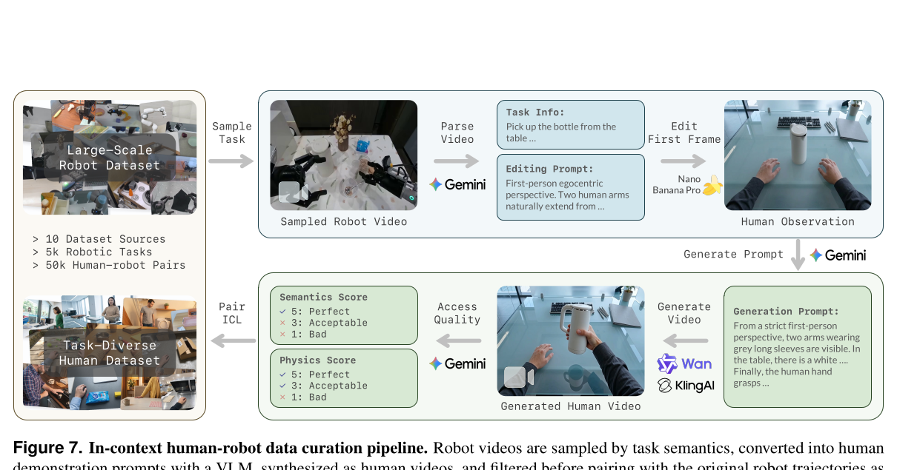
ICL 数据过滤阈值也写在图里
语义分数只有 5 / Perfect 通过，3 / Acceptable 与 1 / Bad 被拒绝；物理分数的 5 / Perfect 和 3 / Acceptable 可通过，1 / Bad 被拒绝。也就是说，任务语义要求更严格，物理视觉允许“可接受”样本进入。
训练实现细节
| 维度 | 配置 | 作用 |
|---|---|---|
| 目标 | Rectified flow，velocity MSE + timestep-dependent reweighting | 图像、视频、动作与 MCP 统一为 flow matching |
| Timestep shift | image 2；web/video 2；robot video-action 5；MCP 10；action 1 | 按模态和任务调整有效噪声难度；动作 timestep 与视频独立 |
| Muon | lr 2×10−3，momentum 0.95，weight decay 0.1 | 更新 Transformer 内所有 2D matrices：attention、action FFN、MoE experts |
| AdamW | lr 1×10−4，β=(0.9,0.95)，ε=10−8，wd 0.01 | 更新 embedders、norm/AdaLN、bias 与输出头 |
| LR schedule | 2,000 steps linear warm-up，之后 constant | 没有报告总 steps，因此 warm-up 占比未知 |
| Gradient | global norm clip 1.0 | 抑制大规模 MoE/flow 联训的极端更新 |
| 分布式 | FSDP full sharding；无 TP / PP / CP | bf16 mixed precision，FP32 gradient reduction，full activation checkpointing |
| Batch | 每 rank 1 条 packed sequence | 未报告 GPU 数与 global batch |
| 验证 | hold out 1% | 用于 training/validation loss 监控 |
复现仍缺哪些关键数字
Tokenizer 的 dℓ、输入分辨率、temporal downsampling；λ1/λperc/λgan/λalign/λact；Perception Encoder 层；MoE group 数、选中 group 数、γ 与 ηlb；planner backbone 与 LoRA 配置；π(τ) 的精确曲线；训练总 steps、GPU 数、FLOPs、时长；consistency grid 与 EMA rate；CFG scale；推理硬件，均没有完整给出。
SECTION 09实验怎么读：哪些结论有数字，哪些仍是展示
论文有四组真正可量化的证据：真实机器人四任务、RoboTwin 50 任务、tokenizer/MCP 消融、推理延迟。ICL、跨 embodiment、planner 与 Foresight 的控制质量主要是定性案例或整体系统结果。
真实机器人：四任务、每任务 20 条演示、一个共享 checkpoint
Fruit Sorting 要把苹果、梨、橙子放入篮子；Pen Collection 依次把三支笔放进杯子；Drawer Tidying 先开抽屉再收纳桌面物体；Plate Handover 要推盘、取纸垫、放垫、再放目标物。四个任务不是分别训练，而是用每任务 20 条 teleoperation demonstrations 做 multi-task supervised finetuning，评估时同一个模型覆盖全部任务。
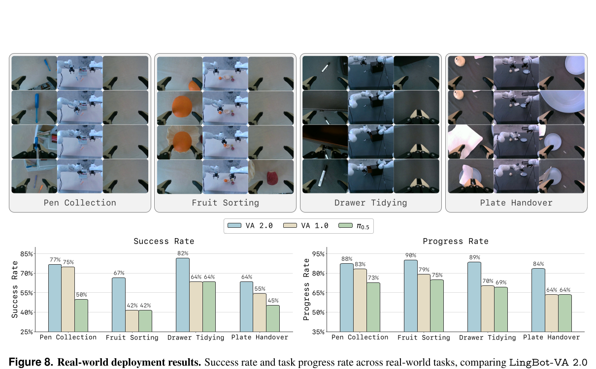
| 任务 | Success rate | Progress rate | ||||
|---|---|---|---|---|---|---|
| VA 2.0 | VA 1.0 | π0.5 | VA 2.0 | VA 1.0 | π0.5 | |
| Pen Collection | 77 | 75 | 50 | 88 | 83 | 73 |
| Fruit Sorting | 67 | 42 | 42 | 90 | 79 | 75 |
| Drawer Tidying | 82 | 64 | 64 | 89 | 70 | 69 |
| Plate Handover | 64 | 55 | 45 | 84 | 64 | 64 |
| 算术平均 | 72.50 | 59.00 | 50.25 | 87.75 | 74.00 | 70.25 |
平均 Success
四个真实任务的简单平均；论文图中没有单独画平均柱。
平均 Progress
在部分完成也有意义的长任务中，progress 比二值 success 更敏感。
论文没有写每个任务的 rollout 数、success/progress 判定规则、初始化扰动范围、误差条、置信区间或多 seed，也没有说明三个模型是否完全共享训练数据、后训练预算与调参资源。因此平均优势清楚，但统计显著性无法判断。
RoboTwin 2.0：50 个双臂任务的主结果
所有方法都在 clean 场景 2,500 条 demos（50/task）与 heavy randomized 场景 25,000 条 demos（500/task）上做多任务训练，总计 27,500 条。
| Method | Clean | Randomized | Avg. |
|---|---|---|---|
| X-VLA | 72.9 | 72.8 | 72.9 |
| π0.5 | 82.7 | 76.8 | 79.8 |
| Motus | 88.7 | 87.0 | 87.9 |
| LingBot-VA | 92.9 | 91.6 | 92.2 |
| LingBot-VA 2.0 | 93.8 | 93.4 | 93.6 |
论文正文有两处算术不一致
按表中已展示数字，93.6−79.8=13.8 个百分点，不是正文写的 14.0；Clean 与 Randomized 的差是 93.8−93.4=0.4 个百分点，不是 0.6。除非作者使用未展示的未舍入值，否则应以表格可复核数字为准。
Tokenizer 消融：预测 horizon 越长，差距越大
作者对 WAN2.2 VAE 与新 tokenizer 分别从头训练同一个 1.3B video-action model，使用相同 token 数、相同 downstream architecture 和相同 RoboTwin post-training。
| Metric | WAN2.2 VAE | Our tokenizer | 增益 | |||
|---|---|---|---|---|---|---|
| Easy | Hard | Easy | Hard | Easy | Hard | |
| Averagehor=1 | 81.1 | 78.4 | 86.2 | 83.1 | +5.1 | +4.7 |
| Averagehor=2 | 75.5 | 73.9 | 85.7 | 84.0 | +10.2 | +10.1 |
| Averagehor=3 | 67.2 | 68.0 | 92.0 | 85.4 | +24.8 | +17.4 |
| Average50 Tasks | 78.0 | 76.0 | 86.6 | 83.1 | +8.6 | +7.1 |
这组结果最直接支持论文的表示论点：重建型 latent 的性能会随 horizon 拉长明显下降，而语义视觉-动作 tokenizer 的收益在长 horizon 更大。不过论文没有定义 Average_hor 的具体聚合方法，也没有解释新 tokenizer 的 hor=3 Easy 为什么反而高于 hor=1。
MCP 消融：不是只涨终点，还显著加快收敛
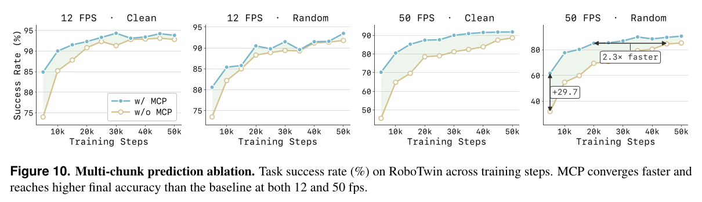
图中其余点没有数值标签，不能把目测曲线写成精确表格。MCP 的最强证据是优化效率；它是否单独提高最终现实机器人上限，还需要独立真实世界消融。
推理加速：每一层都给出累积延迟
| 配置 | Inference time (ms/chunk) ↓ | Async Hz ↑ | 相对基线 |
|---|---|---|---|
| BF16 PyTorch async baseline | 927 | 35 | 1.00× |
| + Consistency distillation | 466 | 69 | 1.99× |
| + FP8 TensorRT compiled execution | 369 | 87 | 2.51× |
| + Paged/ragged KV + FlashInfer | 272 | 118 | 3.41× |
| + Runtime overhead reduction | 142 | 225 | 6.53× |
ICL：有漂亮的组合迁移案例，但没有成功率
训练场景含三种盘子与七个物体。模型只在四个 seen tasks 上微调，每任务 15 demos；测试时给一段人类参考视频与当前机器人观测，不更新权重，执行四个从未见过的物体—目标组合。
| # | 被操作物 | 目标位置 | 用于排除歧义的场景限定 |
|---|---|---|---|
| 1 | white paper cup | white plate | 物体类别唯一 |
| 2 | silver coffee cup | silver plate | 物体类别唯一 |
| 3 | green pear | green plate | 取中间的梨 |
| 4 | silver mug | white plate | 取左侧的杯子 |
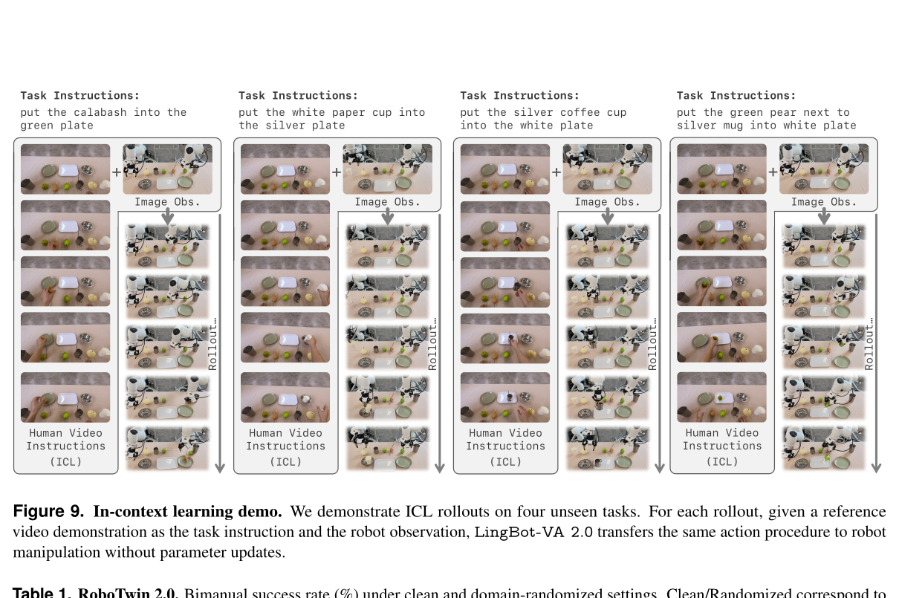
给定动态视觉参考时，模型存在 task-composition transfer 的定性能力；不能据此推出“从零只看一次就学会任意新任务”，因为没有 ICL 成功率、language-only baseline、多 seed，也没有对人类示范之外的机器人示范做独立实验。
四类代表性演示覆盖的能力
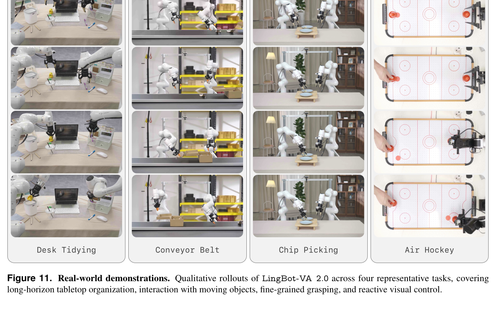
SECTION 10官方项目页补充了什么：能力叙事、交互图与任务演示
官方网页把论文压成一条更面向部署的叙事：模型不等完整视频 rollout，而是在动作执行时预测未来；新观测到达后重锚定；示范视频提供动态上下文；低频 planner 与高频 executor 解耦。
“在执行中并行预测未来，用真实观测重新锚定，面向实时闭环控制。” LingBot-VA 2.0 官方项目页
Foresight Reasoning
官网强调“执行时预测未来”；论文 Eq. (29–30) 明确给出 FDM conditioning 与真实观测重锚定，Table 3 给出速度链路。
一段视频适应新任务
官网描述 ICL 能在不重新训练时理解新布局与节奏。论文 Fig. 9 有四个组合迁移案例，但没有定量成功率。
低频规划、高频控制
论文明确 planner 约 2 Hz，通过异步 buffer 在 chunk boundary 更新策略条件；官网用闭环动画解释这一接口。
跨任务稳定控制
空气曲棍球、薯片夹取、传送带与桌面整理覆盖不同难点，但“稳定”没有单独误差或安全指标。
展开官方 ICL 轮播中的 9 组“示范视频 → 机器人执行”任务
- silver coffee cup → silver plate
- silver coffee cup → white plate
- white paper cup → white plate
- white paper cup → silver plate
- middle green pear → brown-green plate
- left green pear → white plate
- left green pear → brown-green plate
- left silver cup → white plate
- calabash → brown-green plate
这些是项目页轮播组件里的任务标签。网页把它们并列展示，没有逐项标注 seen / unseen，也没有给出每项成功率；因此不能把九组全部称为 zero-shot。论文 Fig. 9 的四个 unseen compositions 仍应以论文实验定义为准。
四个任务海报：不要把演示视频当成统计表
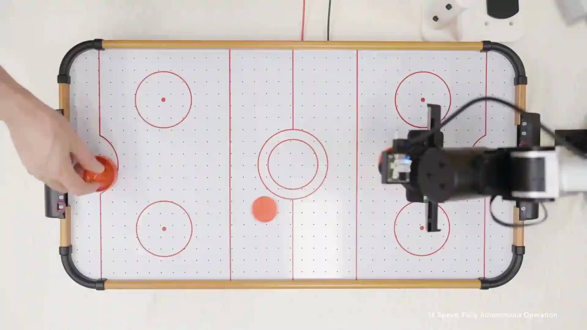
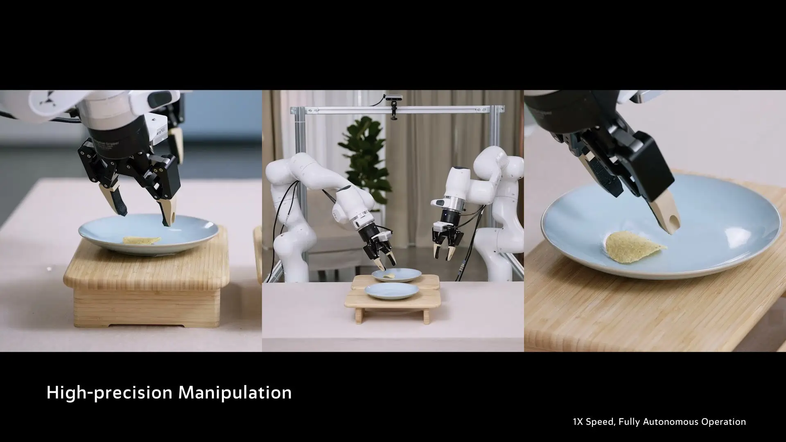
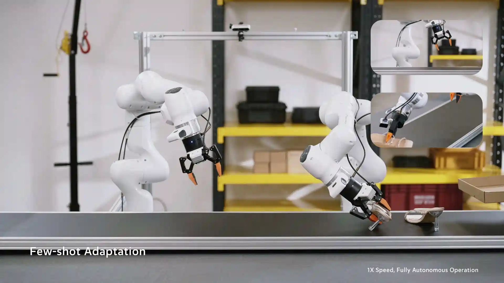
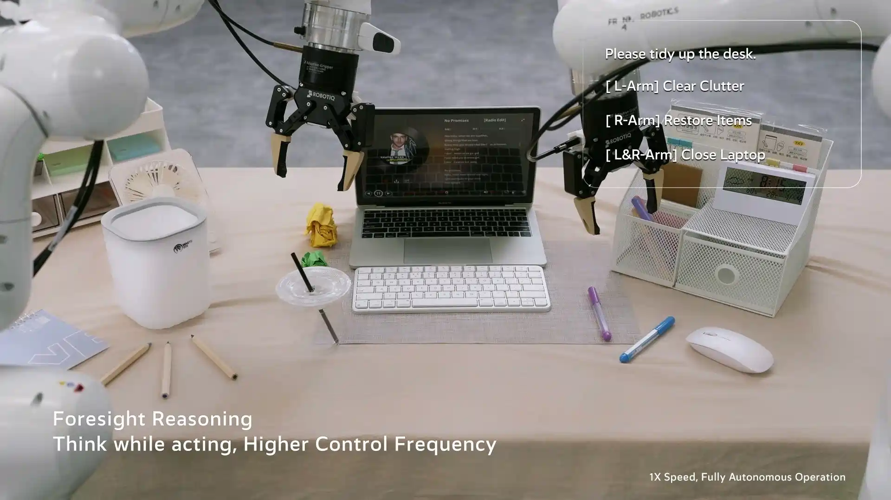
官方成功率图与论文一致，但展示更精简
网页显示四个真实任务的 success rate，以及 RoboTwin Randomized；它省略了论文 Fig. 8 的 progress rate、RoboTwin Clean 与 Avg.。数值本身完全一致：
| 官方页面条目 | LingBot-VA 2.0 | LingBot-VA 1.0 | π0.5 |
|---|---|---|---|
| Pen Collection | 77 | 75 | 50 |
| Fruit Sorting | 67 | 42 | 42 |
| Drawer Tidying | 82 | 64 | 64 |
| Plate Handover | 64 | 55 | 45 |
| RoboTwin Randomized | 93.4 | 91.6 | 76.8 |
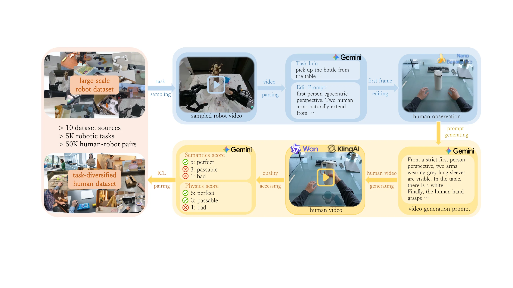
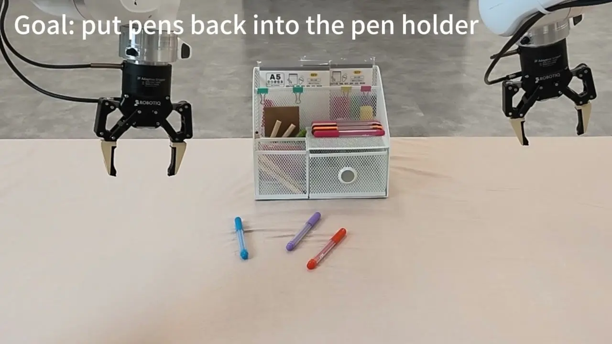
官网速度标签与论文速度指标不是同一件事
项目页有 30 / 60 / 150 Hz 演示片段，并概括“超过 4× 端到端加速”；正式量化仍应引用 Table 3 的 927→142 ms/chunk、35→225 derived Async Hz、6.53×。视频播放帧率、低层动作吞吐率与 observation-conditioned replanning rate 不能互换。
SECTION 11客观评价：这篇论文真正强在哪里，又把哪些问题留在图外
最强的地方
- 设计逻辑一致：表示、causal objective、MCP、异步执行都围绕“预测世界变化再解码动作”。
- Tokenizer 与 MCP 有受控消融：不仅报告总体模型更强，还展示长 horizon 表示收益与收敛效率。
- 工程细节充足：模型宽度、experts、路由、优化器、精度、cache 与 TensorRT 栈都比多数机器人 foundation model 报告更具体。
- 真实任务类型互补：长程整理、动态传送带、薄脆物体、快速游戏分别施压规划、预测、精度与延迟。
- 人手到功能 gripper：不再用 no-op gripper placeholder，而是保留抓握开合时序。
最需要保留的疑问
- 没有失败案例：看不到碰撞、误抓、planner 切错步骤、world-model hallucination 或 ICL 误读。
- 关键模块没逐一消融：native causal、semantic alignment、latent action、MoE、HCT、planner、Foresight re-grounding 都缺独立贡献量化。
- 跨 embodiment 主张缺指标：没有留一机器人迁移矩阵或 zero/few-shot embodiment benchmark。
- 评估统计不完整：真实 rollout 数、误差条、progress 定义、seed、baseline 预算都未报告。
- 复现链条仍断：数据配比、总 steps、硬件与多项损失权重缺失。
几项最重要的“主张—证据”对照
从头 causal 优于双向 retrofit
这是论文最核心的起点判断，但没有 matched-data、matched-compute 的 from-scratch vs retrofit ablation。
10–15 demos 即可适应
主真实 benchmark 实际为 20 demos/task；ICL seen tasks 才是 15/task，且没有 10-shot learning curve。
Tokenizer 改善长 horizon
1.3B matched architecture 上 hor=1/2/3 与 50-task average 全面领先，且 horizon 越长差距越大。
MCP 提高训练效率
5B baseline 只开关 MCP；12/50 fps、clean/random 都更快，明确给出 +29.7 pp 与 2.3×。
ICL 带来新任务组合迁移
四个未见组合能执行，但没有成功率、language-only 对照或不同参考视频敏感性。
MoE 提高控制泛化
Fig. 4 只证明相近 wall-clock loss；没有 dense/MoE 的控制任务成功率对照。
表示接口里最值得追问的歧义
Sec. 2.2 把无标签视频抽出的 latent action 写成 at≡ℓt；Sec. 4.1 又明确 action target/output 是 quantile-normalized 的 raw 30-D robot action；HCT 再加域特定 Ed/Pd。论文没有完整说明三者在同一个 batch 中怎样对齐、是否共享 action diffusion space、ℓt 如何监督 raw action decoder。
同样，“world states 与 actions 位于一个 latent space”的文字略强于形式化：zt 是高维空间 token tensor，ℓt 是独立低维瓶颈，它们通过 IDM/FDM 耦合，却没有显式共享坐标系、对比对齐 loss 或 representation probe。更准确的说法是：它们被放进同一套联合动力学建模体系。
技术风险与真实部署边界
- Temporal average alignment：clip-level 语义对齐可能忽略动作顺序；应加入时序敏感 teacher feature 或 transition contrastive objective。
- Passive latent action identifiability：相机移动、非操作者变化、物体自运动可能被编码成 action；需要因果干预或可控性 probe。
- 2 Hz planner 滞后：快速环境变化下 subtask context 可能落后；应让 executor 触发 event-driven replanning。
- Chunk 内 open-loop：Foresight 只在新观测回来时纠偏；接触任务可按不确定性、视觉变化或力觉事件动态缩短 chunk。
- 没有 safety/OOD 机制：论文未报告不确定性、异常观测、人与机器人共处、安全停止或失败恢复。
- 稀疏模型仍重：15.3B 权重的显存、TensorRT engine 构建与多机器人部署成本没有讨论。
作者提出的三个方向，以及本文补充的三个方向
Planner 与 policy 联合训练
当前两者分开训练、通过固定 JSON 接口连接。联合优化可让 subtask 边界、语言粒度与低层可执行性共同适应。
给 latent action 加交互或强化信号
目前主要来自被动视频。真实交互、reward 或可控性监督可把“观察到的变化”进一步收敛成“可执行的动作变量”。
继续扩数据、MoE 与 embodiment
从双臂操作走向更多机器人结构，并验证稀疏容量在更大数据与更开放环境下是否继续缩放。
本文补充：完整因果消融
对 native causal、HCT、planner、Foresight、distillation/FP8 分别做 factorial ablation，同时报告控制质量与速度。
本文补充：量化 ICL 与失败模式
建立 language-only、single-frame、human-video、robot-video 对照；公开错误参考、错误步骤与安全恢复案例。
本文补充：不确定性感知的 imagination
预测不确定时缩短 chunk、提前请求真实观测或退回保守 controller，避免 imagined latent 在高风险接触中被过度信任。
SECTION 1232 个编号公式速查：从视频压缩到两步实时采样
下面把论文全部编号公式按功能归档。它不是符号堆砌，而是一条完整因果链：压缩观测 → 生成未来 → 逆推动作 → 提取 latent action → 扩展容量与 horizon → 融合人类数据 → 异步闭环 → 蒸馏加速。
A · 从视频生成器到 video-action model
把 T×H×W 视频压缩成时空 latent；ft=T/T′，fs=H/h=W/w。
其中 z(s)=(1−s)ε+sz；网络学习从噪声走向数据的速度。
把原始控制频率上的动作分组，使一段动作与 zt→zt+1 对齐。
未来视觉只依赖过去和现在，是闭环部署的时序约束。
世界预测 × inverse dynamics，是整篇论文最核心的概率分解。
未来视觉分支的 conditional flow matching。
动作分支在状态转移条件下去噪；LVA=Lvid+λactLact。
视频与动作专家共享 attention、拥有不同 FFN；此处 v 表示积分后的样本而非单次速度。
B · Semantic visual-action tokenizer
像素、感知与对抗损失共同保证可解码画面。
把 clip-level latent 拉向冻结 Perception Encoder 的语义特征。
在还原外观与保留语义之间平衡。
逆动力学从相邻状态压缩出控制相关的 transition variable。
Transport map 搬运空间信息，residual 解释非搬运变化。
前向预测未来、反向预测过去，约束 latent action 真的解释 transition。
C · Sparse MoE routing
每个 hidden token 对每个 routed expert 计算 sigmoid score。
Correction bias 只影响选择；主配置 Ne=128、k=8。
对已选 expert 的原始 score 归一化，再乘 routed scale γ。
共享 expert 处理共性，少量 routed experts 提供条件容量。
拥挤 expert 降 bias，冷门 expert 升 bias，不给主 loss 注入大额 balancing gradient。
D · MCP、ICL、人机共训练与多任务预训练
只看 next chunk 的标准监督，容易复制相邻外观。
远期模块复用前一 MCP 的内部 feature，而不是喂真实中间未来。
每个 horizon 各自做 flow matching。
近未来权重最高，远未来提供较弱但密集的轨迹监督。
整段示范 latent 对每个机器人 prediction step 可见。
双手 root pose + finger joints 被映射到 robot-compatible end-effector slice。
d∈{R,H}；世界主干共享，动作 codec 按域分离。
人类与机器人数据都更新共享视频/动作专家。
随训练进度从 T2I/T2V 移向 TI2VA/ICL/HCT，但旧任务保持非零权重。
E · Foresight grounding 与 consistency distillation
当前动作执行时，由策略主干提前想象它造成的视觉结果。
显式加入当前已执行动作 at，匹配异步部署条件。
冻结 flow teacher 沿 PF-ODE 向数据端推进一小步。
同一轨迹任意点都应指向同一 clean endpoint；最终视频与动作各 2 steps。
最后把整篇论文压成一条闭环
语义 tokenizer 先把世界与变化压成可控表示；causal DiT 用网页视频、人类视频和机器人轨迹学习未来；MCP 迫使它看得更远；MoE 给视觉动态足够容量；planner 负责长时语义；Foresight 在执行时先想一步，再让真实观测把想象纠正。
真正的分水岭不是“模型会不会生成未来”，而是这个未来是否被动作解释、是否遵守因果、是否足够快，以及是否愿意在现实反馈面前立即改口。
主要来源
- Native Video-Action Pretraining for Generalizable Robot Control，29 页；方法与实验正文至第 22 页，参考文献第 23–29 页。
- LingBot-VA 2.0 官方项目页：动态任务演示、Foresight / ICL / Planner 能力图、交互式成功率结果。
- 官方 GitHub 技术报告。